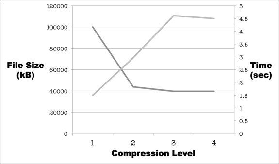
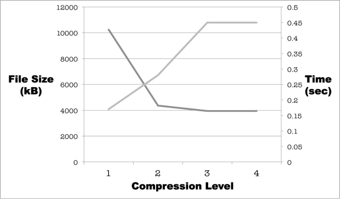
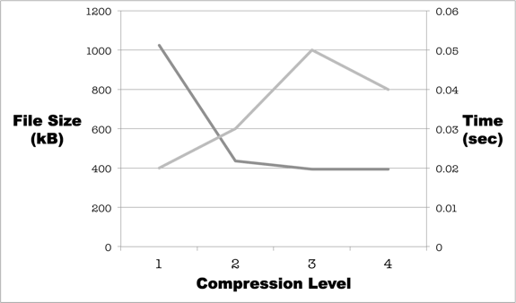

crypto
Simple symmetric GPG file encryption
Text File Benchmarks
All tests were performed on a Late 2011 MacBook Pro (2.4GHz Intel Core i7, 8GB RAM) using gtime v1.7, gpg v2.0.22, and crypto v1.1.0.
Initial testing with gpg on text files, showed that there is a significant compression vs. speed tradeoff. Using Matt Mahoney's enwik8 text file (a 100MB English Wikipedia XML dump) and 10 MB, 1MB files generated from the head of this file, I tested encryption time vs. file size using gpg with four different compression settings. These tests were performed with the GNU time application (gtime) and time was defined as total CPU time (=user time + system time).
The tested compression options included -z 0, -z 1, -z 7, and -z 9. These are indicated with the labels 1, 2, 3, and 4, respectively, on the x-axis of the figures below. File size is indicated by the dark grey lines and total CPU time (user time + system time) is indicated by the light grey lines.
100 MB Text File

10 MB Text File

1MB Text File

I elected to minimize the encryption time x file size product in order to achieve a balanced approach to text file handling in crypto. Across each of these tested file sizes, that occurred at the -z 1 compression level (indicated by 2 on the figures above). At this level, there is a significant decrease in the encryption time relative to higher compression levels without a large file size compromise. This is the default text file compression level in crypto. Users who need more compression, can use the --space option which switches to the -z 7 compression level (which is incidentally the gpg default).
Text File Benchmarks
The text file benchmarks reported on the main benchmarks page were performed on a directory of text files that included Matt Mahoney's enwik8 text test file (100MB English Wikipedia XML dump), and 10MB, 5MB, 2MB, 1MB, and 10kB files that were derived from the head of this file.
The results for this directory of six text files are as follows:

The encryption run total CPU time decreased from 5.73 sec to 3.68 sec (64% of GPG default) with the default crypto text file settings compared with the default GPG settings. With the --speed switch, the time was further reduced to 1.89 sec (33% of GPG default).
The mean % original file size for the default crypto run was 42.8% and for the default GPG run was 38.6%. The file size was slightly larger following the crypto --speed run, though this was negligible (less than 100 bytes per file).